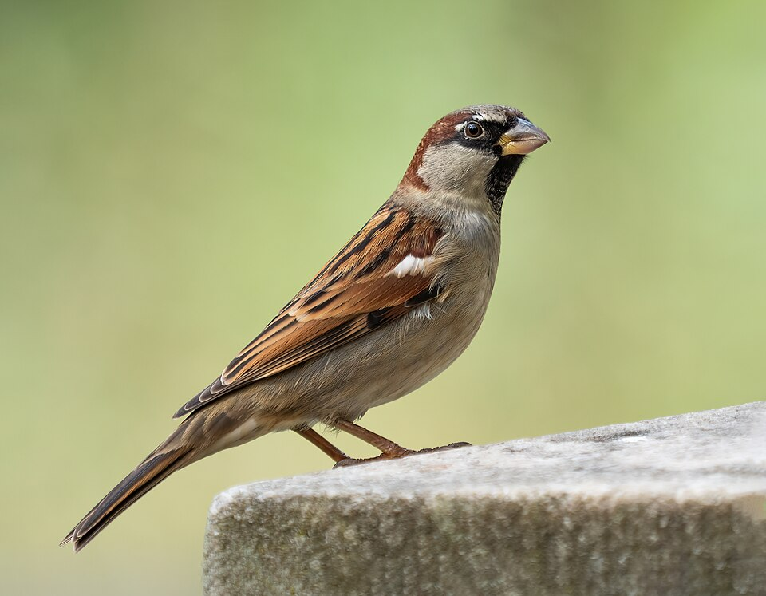
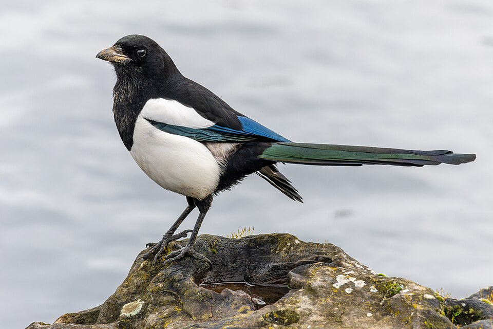
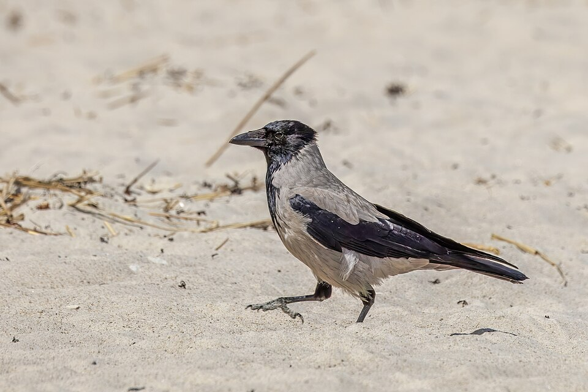
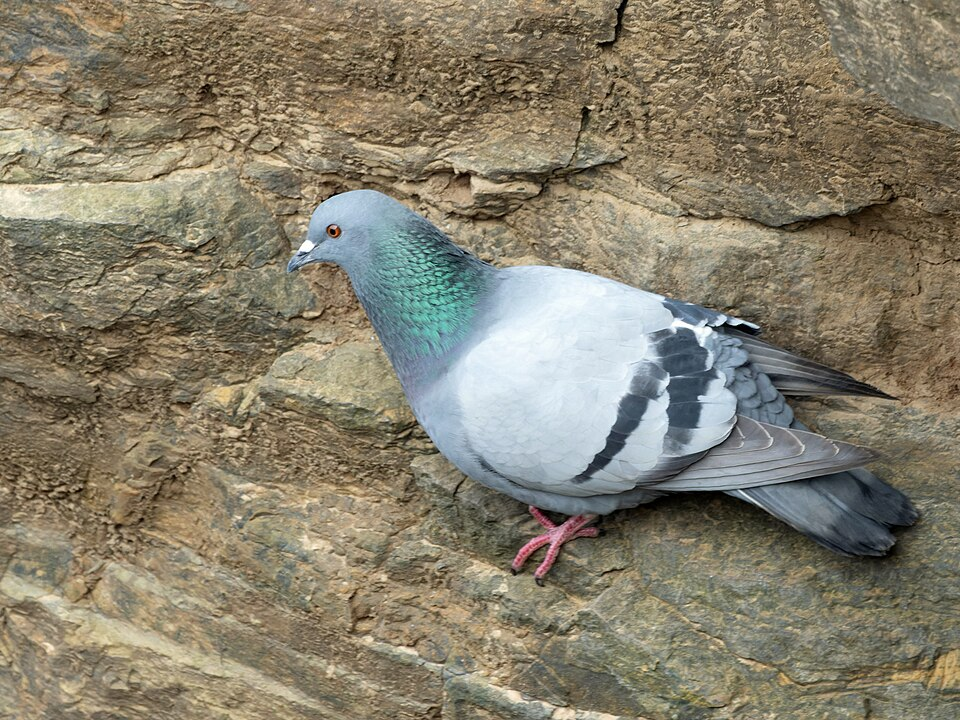
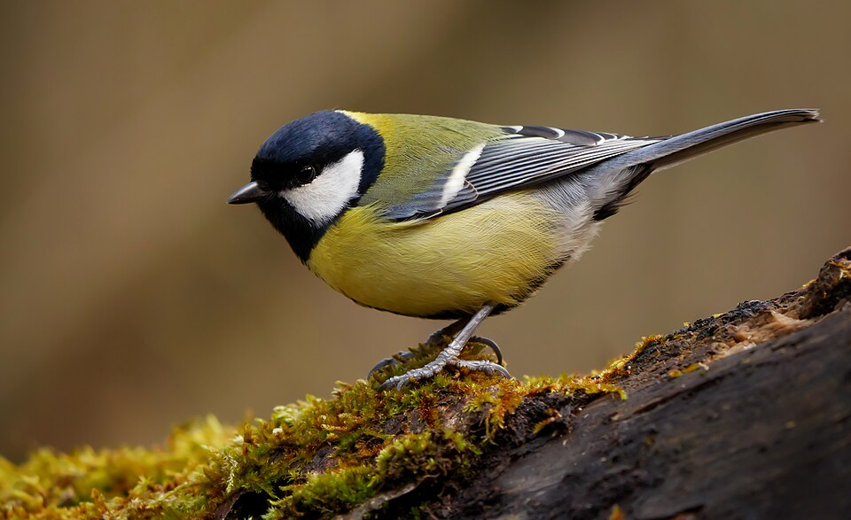
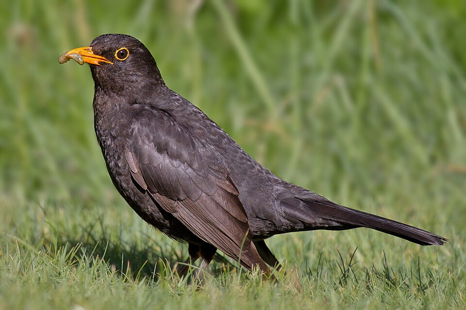

Házi veréb
A város legismertebb madara. Kicsi, barnás-szürke tollú, a hím torka fekete. Az emberek közelében él, gyakran látni étterem- és kávézóteraszokon, ahogy a morzsákra vár. Csapatokban mozog, és hangosan csiripel.
Ez az oldal a Budapesten leggyakrabban látható madarakat mutatja be. Bár a főváros nagy, forgalmas város, a parkjai, terei, a Duna-part és a budai hegyek sok madárfajnak adnak otthont. Az alábbiakban hat közismert fajt ismerhetsz meg fényképpel és rövid leírással, az oldal alján pedig egy (nem valódi) regisztrációs űrlapot is kipróbálhatsz, amellyel a madárbarátok klubjához csatlakozhatnál.
Prezentáció megtekintése →
A város legismertebb madara. Kicsi, barnás-szürke tollú, a hím torka fekete. Az emberek közelében él, gyakran látni étterem- és kávézóteraszokon, ahogy a morzsákra vár. Csapatokban mozog, és hangosan csiripel.

Fekete-fehér tollazata és hosszú, fémesen csillogó farka könnyen felismerhetővé teszi. Nagyon intelligens madár, a parkokban és a kertekben él. Fák tetejére épít nagy, boltozatos fészket.

Szürke testű, fekete fejű és szárnyú, nagy termetű madár. Budapesten szinte mindenhol megtalálható, a szemétgyűjtőktől a tereken át a Duna-partig. Mindenevő és rendkívül alkalmazkodó.

A vadon élő szirti galamb háziasított változatából származik. A hidakon, épületek párkányain és a forgalmas tereken él. Színe változatos: lehet szürke, fehér, barna vagy foltos.

Sárga hasán fekete hosszanti csík húzódik, feje fekete, orcája fehér. Télen az etetőkön a leggyakoribb vendég, tavasszal pedig a madárodúkban költ. Rovarokkal és magvakkal táplálkozik.

A hím teljesen fekete, narancssárga csőrű, a tojó barna. Gyönyörű énekéről ismert, amelyet kora tavasszal hajnalban és alkonyatkor hallhatunk. A gyepen földigilisztát keres.
Figyelem: ez az űrlap nem valódi, az adataidat nem tároljuk és nem küldjük el sehova!
Figyelem: ez az űrlap nem valódi, az adataidat nem tároljuk és nem küldjük el sehova!